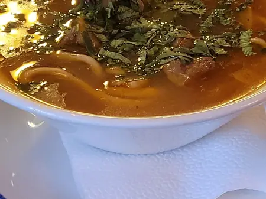

Фото: Svetlov Artem, CC BY 4.0

Лагман
Густая подлива из баранины с овощами поверх длинной лапши
75 мин4 порц.798 ккал на порциюБ 37 · Ж 37 · У 83Среднеазиатская кухня
Продукты на 4 порц.
- Баранина500 г
- Яичная лапша400 г
- Лук репчатый2 шт
- Морковь2 шт
- Перец болгарский2 шт
- Помидоры3 шт
- Картофель по желанию2 шт
- Чеснок3 зуб.
- Томатная паста1 ст. л.
- Зира1 ч. л.
- Острый перец молотый по желанию1 щеп.
- Растительное масло3 ст. л.
- Вода1 л
- Соль2 ч. л.
- Перец чёрный молотый0,5 ч. л.
- Кинза0,5 пучок
Как готовить
- Нарежьте баранину кубиками 1,5 см, все овощи кубиками того же размера.
- Раскалите масло в казане на сильном огне и обжарьте мясо 7 минут до корочки.
- Добавьте лук и жарьте 5 минут, затем морковь и перец ещё 5 минут.
- Положите помидоры, томатную пасту, чеснок, зиру и острый перец, жарьте 5 минут, помешивая.
- Добавьте картофель, влейте горячую воду, посолите. Накройте и тушите на слабом огне 30 минут, пока мясо и картофель не станут мягкими.
- Лапшу отварите в подсоленной воде по инструкции на пачке и откиньте.
- Разложите лапшу по глубоким тарелкам, залейте горячей подливой и посыпьте кинзой.
Совет. В оригинале лапшу вытягивают руками из теста, но толстая яичная лапша или спагетти подходят для дома. Подливу можно сделать гуще или жиже, меняя количество воды.